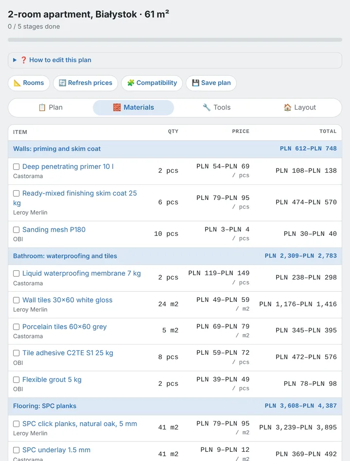
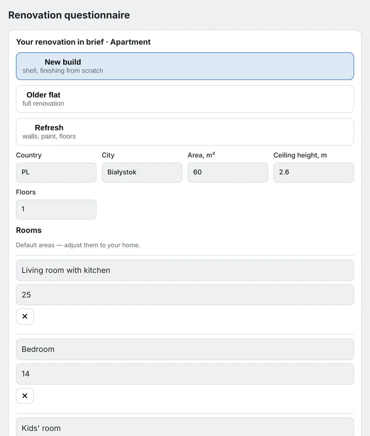

Zaplanuj remont z Claude
Remont to darmowy konektor MCP, który zamienia rozmowę z Claude w pełny plan remontu: kolejność prac, materiały wyliczone z wymiarów pomieszczeń, ceny z marketów budowlanych w Twoim kraju, stawki fachowców, listę zadań, rzut mieszkania i widok 3D.
Podłącz do Claudehttps://remont-mcp.wrpzdm9jmt.workers.dev/mcp
Jak to wygląda





Co potrafi
Materiały z wymiarów
Farba, gładź, grunt, płytki, klej, fuga, panele, podkład, płyty g-k — z opakowaniami i zapasem.
Kolejność prac
Etapy we właściwej kolejności z czasem schnięcia; zadania jako lista do odhaczania.
Ceny z marketów
Castorama, Leroy Merlin, OBI i inne — z linkami do produktów; warianty standard, premium i lux.
Sam czy fachowiec
Każdy etap przełączysz między „sam” a „fachowiec” — kosztorys się przelicza.
Narzędzia
Co kupić, a co taniej wypożyczyć — dla etapów, które robisz sam.
Rzut i 3D
Pokoje, drzwi i okna, przeciągane meble i szafki kuchenne, widok 3D.
Zapisane plany
Osobisty kod otwiera Twoje plany w każdym czacie lub z linku; zakupy i odhaczenia zostają.
22 kraje
Polska, UE, Wielka Brytania, USA, Kanada, Ukraina i inne. Plany w 5 językach.
Jak to działa
- Raz dodaj konektor do Claude.
- Opisz Claude mieszkanie albo wyślij zdjęcie rzutu — lub wypełnij krótką ankietę.
- Dostajesz interaktywny plan: zmieniaj materiały, przełączaj „sam / fachowiec”, odhaczaj zadania, zapisuj.
Podłączenie
Claude (strona, komputer, telefon)
- Otwórz claude.ai i zaloguj się.
- Przejdź do Ustawienia → Konektory (w nowszych wersjach: Customize → Connectors).
- Kliknij „Dodaj własny konektor” (Add custom connector) lub „+”.
- Nazwa: Remont. URL: adres serwera powyżej. Bez OAuth i kluczy — kliknij Dodaj.
- W czacie otwórz menu „+” / narzędzia i sprawdź, czy Remont jest włączony. Potem po prostu zapytaj o remont.
Plan darmowy: jeden własny konektor. Team / Enterprise: najpierw dodaje go właściciel w ustawieniach organizacji. Po dodaniu działa też w aplikacjach Claude na komputerze i telefonie.
ChatGPT
W trybie dewelopera dodaj własny konektor (aplikację) z adresem serwera, bez uwierzytelniania.
Claude Code
claude mcp add --transport http remont https://remont-mcp.wrpzdm9jmt.workers.dev/mcp
Cursor, VS Code i inne klienty MCP
{
"mcpServers": {
"remont": {
"url": "https://remont-mcp.wrpzdm9jmt.workers.dev/mcp"
}
}
}Zapytaj na przykład
Pytania
Czy to jest darmowe?
Tak. Konektor jest darmowy i nie wymaga logowania. Potrzebne jest konto w Claude (lub innym kliencie MCP); możliwość dodania własnych konektorów zależy od planu.
Skąd są ceny?
Claude szuka ich w marketach budowlanych Twojego kraju i podaje link do każdego produktu. Jeśli ceny jeszcze nie znaleziono, plan pokazuje cenę orientacyjną ze znakiem ≈.
A moje dane?
Bez konta i bez danych osobowych. Plany są zapisane pod losowym kodem; linków nie da się zgadnąć i nie są indeksowane.
Jakie kraje?
Wbudowane są 22 kraje, w tym Polska, Niemcy, Wielka Brytania, USA, Kanada i Ukraina. Dla innych krajów Claude sam doda walutę i sklepy.